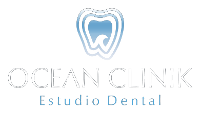

Ocean Clinik La Palma · Dirección clínica: Dr. Claudio Vázquez y equipo
Landing de captación de leads con formulario.
Ver página → AplicaciónAplicación con preguntas de cualificación.
Ver página → LlamadaAgenda con hueco para Calendly/GHL.
Ver página → VSLProblema, método, oferta y FAQs.
Ver página → QuizSegmenta al paciente y captura sus datos.
Ver página →5 páginas optimizadas (una por keyword) · Clínica de Abades
Vista previa privada · Solo clínica de Tenerife Sur (Abades). Pendiente: dominio final, reseñas de Google y conexión de formularios. Ver GUIA-SEO-PROGRAMADOR.md.